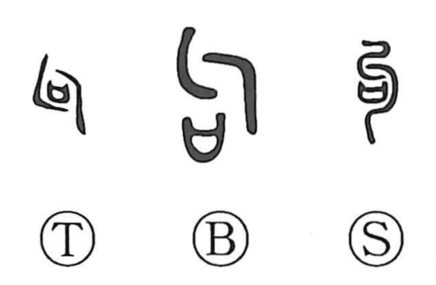

句

Kun: | On: ku
phrase ・ clause
Explanation
A compound graph that brings together 勹, the side view of a body bent double—originally the drawn-up form of a corpse—and a mouth/enclosure element understood as the sacred receptacle into which covenant texts to the gods were placed. The pairing evokes burial rites for a body with contracted limbs, much like the funerary nuance seen in 局. From this image of bending arose usages such as 句曲 for stooping or folding, 句兵 for a weapon with a hooked edge, and 句爪 for a raptor’s long, hooked claws. In writing, a small bent stroke was used to mark off sense units, and by extension 句 came to signify a bounded unit of language—hence a clause or phrase, as in 語句 and 章句.